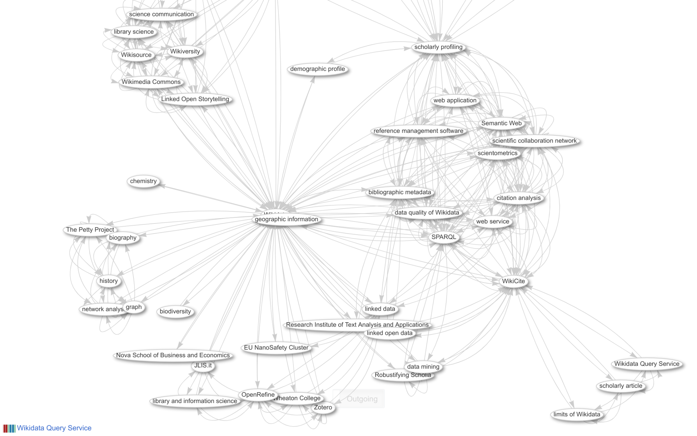

Discovery & Retrieval
Vom 9.-12. Oktober 2023 findet an der TH Wildau der 3. Booksprint statt für die Kapitel
Digitalisierung von Kulturgütern: Digitale Bibliotheken und Portale, Workflows, Metadaten, Standards, OCR/OLR, Viewer, 3D-Objekte…
Forschungsnahe Dienste: Repositorien, Open-Access, FDM, Forschungsinformationssysteme, Open Science, Open Data, Digital Humanities…
Kommunikation und Wissensmanagement: Öffentlichkeitsarbeit, CMS, Social Media, E-Learning, Videokonferenzen, Chat-Systeme, Wikis, Intranet…
sowie zu Gestaltung und Endredaktion des Handbuch IT in Bibliotheken.
Im Gegensatz zum klassischen Online Public Access Catalogue (OPAC) bieten Discovery-Systeme mehr Inhalte, Funktionen und in der Regel auch modernere Benutzeroberflächen. In diesem Kapitel werden zunächst die Unterschiede beider Recherchesysteme erklärt sowie Grenzen und Alternativen beleuchtet. In der Folge werden die einzelnen Bestandteile, Funktionen und Dienste vorgestellt und Informationen zu Auswahl und Betrieb von Discovery-Systemen geliefert.
Einleitung
Als Discovery-Systeme werden Rechercheplattformen bezeichnet, die möglichst alle Dienste einer Bibliothek über einen einheitlichen Zugang nutzbar machen. Insbesondere beschränken sich die recherchierbaren Medien nicht nur auf den lokalen Bestand. Die Benutzung und der Funktionsumfang orientieren sich dabei an gängigen Suchmaschinen und Verzeichnissen im Web.
Ursprung und Motivation
Die Entstehung von Discovery-Systemen zu Beginn der 2000er Jahre hatte mehrere Gründe: Bibliothekarische Recherchesysteme spielten im Informationsverhalten insbesondere von studentischen Nutzenden nur noch eine untergeordnete Rolle. Parallel zeichnete sich ab, dass die dritte Generation der Bibliotheksmanagementsysteme bezüglich ihrer OPAC-Module stagnierte, vornehmlich in Bezug auf das Design, aber auch hinsichtlich ihrer Funktionalitäten. Außerdem wurde Suchmaschinen-Technologie als Open Source-Software verfügbar, so dass technisch aufgeschlossenen Einrichtungen eigene Experimente mit der Indexierung bibliografischer Daten begannen.
Zum gegenwärtigen Zeitpunkt sind Discovery-Systeme in wissenschaftlichen und zunehmend auch in öffentlichen Bibliotheken verbreitet. Es gibt eine Reihe von Produkten kommerzieller Anbieter und einige Open Source Projekte. Discovery-Systeme können von Bibliotheken selbst oder durch Hosting-Anbieter wie Verbundzentralen, Hersteller und kommerzielle Dienstleister betrieben werden. Die Hersteller kommerzieller Bibliotheksmanagementsysteme der neueren Generation bieten Discovery-Systeme an, die besonders gut mit dem BMS des gleichen Herstellers zusammenarbeiten.
Wenn Bibliotheken neben dem Bestandskatalog andere Repositorien betreiben (Dokumenten-Server, Digitalisate-Server, Forschungsdaten-Server, …) ist die Einführung eines Discovery-Systems eine Möglichkeit diese Datenbestände gemeinsam zugänglich zu machen.
Vergleich mit klassischen Katalogen
Da Discovery-Systeme die Metadaten und Volltexte anders als die klassischen OPACs aufbereiten, sind Suchstrategien und -ergebnisse in beiden Systemen unterschiedlich.
Discovery-Systeme richten sich in der Regel an Benutzende, die den Umgang mit bibliografischen Recherchesystemen wie Katalogen und Fachbibliographien nicht gewohnt sind und die mit den Nutzungsmustern bedient werden sollen, die sie auch aus dem Web gewohnt sind.
Neben der Recherche nach bibliografischen Informationen sollen Discovery-Systeme auch den Zugriff bzw. die Bereitstellung von Medien unterstützen. Dieser auch als Delivery bezeichnete Prozess hat sich bereits in der frühen Phase der Discovery-Systeme als zentrales Element aus Sicht der Nutzenden herausgestellt. Die Anbindung an Ausleihsysteme und Link Resolver ist daher ein wichtiges Qualitätskriterium.
Neuere BMS wie FOLIO und Alma enthalten zum Teil gar keinen klassischen OPAC mehr: mit diesen Systemen muss daher immer ein zusätzliches Discovery-System eingesetzt werden.
Viele Bibliotheken erschließen E-Ressourcen nicht in vollem Umfang in ihrem BMS. Daher sind im OPAC, der zu diesem BMS gehört, die E-Ressourcen nicht oder nur eingeschränkt auffindbar. Wenn die Bibliothek ein Discovery-System betreibt, können Metadaten zu E-Ressourcen über einen ETL-Prozess in den Index des Discovery-Systems geladen werden. Voraussetzung dafür ist, dass den Metadaten mittels Electronic Ressource Management (ERM) entsprechende Nutzungslizenzen zugeordnet sind.
| OPAC/Katalog | Discovery-System | |
|---|---|---|
| Suchraum | nur lokaler Bestand, nur selbständige Werke | lokaler Bestand, aber auch Verbunddaten, bibliografische Daten, Volltexte… |
| Suchprinzip | exakte Suche, feldbasierte Suche mit Boolescher Logik | best match/natürlichsprachige Suche |
| Suchunterstützung | eher wenig | Autovervollständigung, Suchvorschläge, Facetten |
| Sortierung | Standardmäßig nach Aktualität | Standardmäßig nach Relevanz |
| Mehrwertdienste | Buchcover, Listen, Exportformate | Buchcover, Listen, Stöbern/Entdecken |
| Metadatenmodell | bibliothekarisches Schema mit Hierarchien und Verweisen | „flache Version“ eines bibliothekarischen Schemas |
Grenzen und Alternativen
Discovery-Systeme sind in der Regel nur einer von vielen Bausteinen in der Prozesskette der Recherche, Bewertung und Beschaffung von Literatur und spielen an unterschiedlichen Stellen eine Rolle. Sie helfen dabei, Literatur zu entdecken und Zugangswege zu ermitteln und brechen die traditionelle Grenze zwischen Katalog und Bibliografien durch einen zentralen Sucheinstieg auf. Trotz dieser Stärken können die Systeme nachgewiesene Medien nur begrenzt kontextualisieren und bewerten und bleiben in der Praxis oft hinter den Erwartungen zurück (Christensen 2022). Je nach Anwendung spielen daher alternative Systeme weiterhin eine Rolle:
komplexe bibliografische Angaben, zum Beispiel zum Erscheinungsverlauf von Zeitschriften, mehrbändigen Werken oder die Suchen nach Signaturen lassen sich möglicherweise schneller über herkömmliche bibliothekarische Instrumente beziehungsweise Spezialdatenbanken wie die des BMS ermitteln.
zum Entdecken von Literatur eignen sich auch allgemeine Suchmaschinen oder spezielle Academic Search Engines wie Google Scholar sowie gänzlich andere Wege wie bestehende Literaturverzeichnisse, Empfehlungslisten auf Lernplattformen und Webshops.
Insbesondere Webshops haben im Vergleich zu Discovery-Systemen sehr personalisierte Such- und Empfehlungsdienste, die jedoch auf einer intensiven Auswertung des jeweiligen Nutzungsverhaltens basieren. Die Verwendung dieser Daten zur Personalisierung ist auch in Discovery-Systemen denkbar, wird aber aus Datenschutz- und Neutralitätsgründen grundsätzlich eher abgelehnt.
Eine vergleichsweise neue Herangehensweise insbesondere an das entdeckende Suchen bieten Wissensgraphen (knowledge graphs), die die vielfältigen Beziehungen zwischen Dokumenten und damit verknüpften Elementen darstellen und visualisieren. Die Anforderungen an die Qualität der so aufbereiteten Daten sind jedoch ungleich höher. Entsprechende Systeme existieren bereits in ausgewählten Bereichen, zum Beispiel die Plattform SoNAR zur historischen Netzwerkanalyse. Ein ernstzunehmendes Beispiel für einen allgemeinen Wissensgraphen ist die Datenbank Wikidata mit ihren bibliographischen Inhalten WikiCite und dem dazu gehörigen Browsing-Interface Scholia (siehe Abbildung Abbildung 4.1).

Grundsätzlich gilt, dass die Grenzen zwischen Discovery-Systemen und Alternativen in der Praxis fließend sind und dass Discovery-Systeme perspektivisch um Funktionen anderer Systeme erweitert werden können und sollten.
Komponenten
Ein Discovery-System umfasst verschiedene Komponenten. Dazu gehören
eine Benutzungs- oder Rechercheoberfläche (Frontend),
der Suchindex (ein oder mehrere Quell-Indizes) sowie die operativen Aspekte
ETL-Prozesse und
die Konfiguration der Rechercheoberfläche.
Angebunden ist häufig auch eine Komponente zur Authentifizierung und Autorisierung.
Frontend
Das Rechercheoberfläche (User Interface) umfasst typischerweise eine Startseite, eine einfache und eine erweiterte Suche, eine Trefferliste mit Facetten sowie eine Detailseite angeboten. Mitunter sind auf der Startseite auch thematische Sucheinstiege verfügbar, z.B. ein Browsing über eine Klassifikation oder Sammlungen. Außerdem gibt es meistens einen persönlichen Bereich, in dem auf das eigene Bibliothekskonto im BMS zugegriffen und gespeicherte Suchanfragen und Literaturlisten verwaltet werden können.
Die Gestaltungsmöglichkeiten für Design und Layout des User Interface reichen von einer einfachen optischen Anpassung bei Schriften, Farben und Logos bis hin zu größeren Veränderungen im Seitenaufbau, je nachdem, welcher Art das eingesetzte System ist (Eigenentwicklung auf OpenSource-Basis, gehostetes kommerzielles System o.ä.).
Suchindex
Zentraler Bestandteil eines Discovery-Systems sind auf Grundlage etablierter Suchmaschinentechnologie wie Apache Solr und Elasticsearch entwickelte Suchindizes.
Der Index eines Discovery-Systems enthält Metadaten und ggf. damit verknüpfte Daten wie Volltexte, Inhaltsverzeichnisse und Übersetzungen. Im Suchindex kommen also Daten unterschiedlicher Art und Herkunft zusammen. Die Daten können in einzelnen Kollektionen aufbereitet sein, z.B. nach Bestandsdaten von (Teil-)Bibliotheken oder Verbünden, Daten einzelner Verlage, Metadaten aus Repositorien etc. Es besteht die Möglichkeit, den Suchraum des Discovery-Systems individuell zu konfigurieren. Der Aufbau eines Index in Eigenregie ist bei entsprechenden Prozesskenntnissen und personellen Kapazitäten möglich und schafft Freiheiten zur Berücksichtigung eigener Datenkollektionen.
Einige Discovery-Systeme können Suchanfragen gleichzeitig an mehrere Suchindizes senden und die Treffer aus den unterschiedlichen Suchindizes in einer Gesamtliste zusammenführen. Dies setzt allerdings eine Koordination der genutzten Suchindizes voraus. Dieser Aufbau ermöglicht es den Bibliotheken auch, verschiedene Datenquellen in ihrem Discovery-System gemeinsam zugänglich zu machen. Teils werden die Quellen selbst ausgewertet (z.B. Harvesting der Daten des eigenen Katalogs, relevanter Repositorien, …), teils werden dafür andere freie oder kommerzielle Suchindizes (K10plus-Zentral, Gemeinsamer Verbünde Index, EBSCO-Discovery-Index, ExLibris Central Discovery Index,…) genutzt.
Die Daten, die in Suchindizes aufgenommen werden sollen, werden im Rahmen eines ETL-Prozess aus verschiedenen Datenquellen (Kataloge/BMS, Repositorien, bibliographische Fachdatenbanken…) gesammelt, konvertiert und dann in den Suchindex geladen. Für jede Quelle muss dieser Prozess entsprechend eingerichtet und für Aktualisierungen regelmäßig ausgeführt werden.
Bei den ETL-Prozessen werden die Daten aus den verschiedenen Datenquellen transformiert. Dabei werden z.B. die MARC-Struktur mit Feldern, Indikatoren und Unterfelden in eine einfachere Feldstruktur überführt. Die Daten werden entsprechend den verschiedenen Such- und Navigationsbedürfnissen in unterschiedliche Indexfelder überführt. Ein Datum (z.B. Autorennamen) kann für verschiedene Suchtypen unterschiedlich aufbereitet und mehrfach im Index gespeichert werden. Bei der Aufbereitung werden die Daten analysiert und etablierte Verfahren zur Relevanzberechnung für die Sortierung innerhalb der Trefferliste eingesetzt.
Für die Bildung von Facetten aus den Einträgen der Trefferliste werden spezielle Daten ermittelt. Diese Facetten-Daten sind technisch gesehen Suchbegriffe und dienen der nachträglichen Verfeinerung der Trefferliste. Beispiele für Facetten, die zur Einschränkung genutzt werden, sind Autorennamen, Schlagwörter, Medienarten, Standorte physischer Medien oder auch Kennzeichnung von Open-Access-Material und vieles andere mehr).
Funktionen
Ein Discovery-System ist mehr als ein reines Nachweissystem. Der Funktionsumfang umfasst daher auch mehr als die reine Recherche. Der Anspruch an ein Discovery-System, alle Informationen zu Medien an einer Stelle zu bündeln, sollte prinzipiell auch alle Dienstleistungen zu diesen Medien umfassen. Daher sollten auch Informationen zur Bereitstellung von Literatur enthalten, weitere Dienste integriert und eine Personalisierung möglich sein.
Recherche
Hauptfunktionen des Discovery-Systems sind die Recherche, die Anzeige von Metadaten und die Hinführung zur Nutzung der Medien. Im einzelnen geht es um folgende Punkte:
einfache Suche ohne Spezifizierung eines Suchfeldes
Suche in Feldern der Metadaten (Titel, ISBN, Schlagworte)
erweiterte Suche mit Möglichkeiten der Verknüpfung von Suchen in verschiedenen Feldern
Navigation in Trefferlisten über Facetten und Sortierung
Detailanzeige einzelner Treffer
Export von Literaturangaben
Die Suche in Discovery-Systemen nutzt in der Regel verschiedene Funktionen der Suchmaschinentechnologie aus, um einen eingegebenen Suchbegriff gegen den Index abzuprüfen. Daher liefern Discovery-Systeme mit dem Suchparadigma „beste Treffer“ statt „exakte Treffer“ mehr Treffer als Bibliothekskataloge (Steilen 2012). Sie nutzen außerdem Algorithmen für die Relevanzsortierung (Ranking), um die Trefferlisten möglichst nutzerorientiert aufzubereiten. Die Sortierungsalgorithmen sorgen bei Übereinstimmungen von Suchbegriff und Indexeintrag in definierten Feldern (Titel, Schlagwort…) für eine Bevorzugung. Anders als bei Web-Suchmaschinen gehen Popularitätsdaten wie die Anzahl von Ausleihen, Aufrufen und Zitationen bislang nicht in das Ranking ein.
Zu den Funktionalitäten für die Suchunterstützung gehören auch die Auto-Vervollständigung sowie die Vorschlagsfunktion von Suchbegriffen. In beiden Fällen wird der Suchindex in Echtzeit geprüft. Es gehört zu den zentralen Zielen von Discovery-Systemen, Null-Treffer-Meldungen zu vermeiden.
Facetten sind ebenfalls eine Suchmaschinen-typische Funktion und dienen der Eingrenzung von Treffermengen. Hierfür werden einzelne Metadatenfelder wie Schlagwörter, Namen von Verfasser*innen oder Dokumenttypen in Bezug auf eine Suchanfrage ausgewertet und nach Vorkommenshäufigkeit sortiert. Den Facetten wird eine wichtige Rolle beim entdeckenden Suchen zugesprochen. Zur Präsentation der Facetten in der Rechercheoberfläche gibt es verschiedene Möglichkeiten (siehe Abbildung 4.2). Die Auswahl der angebotenen Facetten muss jedoch gut vorbereitet werden. Fehlen die entsprechenden Metadaten bei bestimmten Titeln, können durch Facettierung auch Treffer verloren gehen.
Die Weiterverwendung von Literaturangaben wird durch verschiedene Exportmöglichkeiten unterstützt. In der Regel lassen sich Angaben per Mail verschicken, ausdrucken oder in unterschiedlichen Formaten und Zitierstilen herunterladen.
Bereitstellungsdienste
Die Evaluationen früher Discovery-Systeme haben bereits gezeigt, dass Informationen darüber, ob und wie ein gefundenes Medium zugänglich ist, von zentraler Bedeutung sind. Diese Bereitstellungsdienste, auch Delivery-Funktionen genannt, umfassen für physische und digitale Medien jeweils unterschiedliche Punkte.
Bereitstellungsdienste für physische Medien:
Nachweise von Standorten, Ausleihbarkeit und aktuellem Ausleihstatus
Verlinkung zu Verbundkatalogen mit Fernleihmöglichkeiten
Verlinkung zur Fernleihe und zu Dokumentlieferdiensten
Möglichkeit zur Anfrage nach einer Digitalisierung oder Bereitstellung in einem Semesterapparat
Möglichkeit zur Abgabe eines Anschaffungsvorschlags
Bereitstellungsdienste für digitale Medien:
idealerweise eine auf das jeweilige Nutzungsszenario angepasste Zugangs-URL
weitere Zugangs-URLs
Hinweise zur Nutzung elektronischer Medien, z.B. zur Zugänglichkeit über VPN, notwendige Reader, DRM etc.
Die Verfügbarkeit und Entleihbarkeit von physischen Medien, die der Bibliothek gehören, werden über eine sogenannte Verfügbarkeitsrecherche, die das Discovery-System im Hintergrund ausführt, ermittelt und angezeigt. Diese Abfragen werden mittels Schnittstellen zu den Ausleihmodulen der Bibliotheksmanagementsysteme durchgeführt. Diese Schnittstellen können proprietär oder offen sein. Beispiele für Hersteller-unabhängige Schnittstellen sind die Patrons Account Information API (PAIA) als offene Schnittstelle und das Session Initiation Protocol (SIP2) als intern genutzter Standard oder das NISO Circulation Interchange Protocol (NCIP). Verschiedene Discovery-Systeme unterstützen diese oder andere Schnittstellen zum Ausleihsystem in Form von so genannten Treibern – beispielsweise unterstützt VuFind die Anbindung an FOLIO durch einen eigenen FOLIO-Treiber.
Bei den digitalen Medien ist die größte Herausforderung, den jeweils besten von in der Regel mehreren Zugangslinks für ein Medium zu identifizieren und zur Anzeige zu bringen. Zur Ermittlung des besten Zugangslinks sind in der Regel mehrere Prüfschritte erforderlich. Idealerweise sind solche Prüfschritte konfigurierbar, allerdings ist diese Funktion oftmals kein integraler Bestandteil von Discovery-Systemen, sondern ein eigener Dienst. Ein Beispiel für einen solchen separaten Dienst ist der Webdienst DAIA+ (Keßler 2018). Ein andere Möglichkeit ist der Einsatz sogenannter Link Resolver. Beim Link-Resolving wird über die Metadaten ein Hyperlink zu Diensten der Bibliothek ermittelt. Es wird vorrangig bei der Ermittlung von Diensten für Metadaten zu solchen Medien genutzt, die nicht aus dem BMS der Bibliothek und E-Ressourcen stammen. Ein Verfahren für das Link-Resolving ist die Open-URL (NISO-Standard Z39.88).
Anreicherungsdienste
Die Ergänzung von bibliotheksseitig erstellten Metadaten mit weiteren Informationen gibt es bereits in den klassischen OPACs. Beispiele sind gescannte Inhaltsverzeichnisse, Links auf Wikipedia-Artikel oder die Integration von Buchcovern.
Zu den am häufigsten genutzten Anreicherungsdiensten gehören:
Cover-Anzeigen
kontextabhängige Infoboxen mit Informationen aus Nachschlagewerken, z.B. Autorenportraits z.B. via Wikidata und GND, Informationen aus Nachschlagewerken wie Munzinger
Empfehlungsdienste mit Hinweisen auf Literatur zum selben Thema (z.B. BibTip, bX)
Visualisierungen von Buchstandorten über Gebäudeinformationssysteme (z.B. Mapongo, V:Scout)
Integration mit weiteren Diensten, z.B. der Leseförderungs-App Antolin
Grundsätzlich erlaubt die Systemarchitektur von Discovery-Systemen die Integration von diesen und anderen Diensten über einschlägige Schnittstellen, so dass sich über die gelisteten Dienste noch zahlreiche weitere Möglichkeiten ergeben.
Personalisierung
Discovery-Systeme erlauben in der Regel eine Anmeldung in einem persönlichen Bereich, der folgende Funktionalitäten umfassen kann:
Einsicht in das Bibliothekskonto einschließlich der Möglichkeit zum Vormerken und Verlängern
Speicherung von Suchanfragen
Speicherung von Literaturlisten
Alerting-Dienste
Literaturlisten können alternativ dazu auch sitzungsbasiert gespeichert werden. Dauerhaft gespeicherte Listen lassen sich auch veröffentlichen und damit allgemein zugänglich machen, was auch die Präsentation von Auswahllisten oder Semesterapparaten erlaubt.
Häufig können auch Suchanfragen gespeichert werden. Die Einrichtung von Alerting-Diensten hilft den Nutzer*innen, sich mit wenig Aufwand über neue Titel informieren zu lassen. Alerting-Dienste beinhalten das regelmäßige (automatisierte) Absetzen einer Suchanfrage und das Versenden von Information, wenn die Suchanfrage veränderte Trefferlisten (in der Regel: neue Titel) liefert.
Thematische Sucheinstiege
Wie beschrieben bieten Trefferlisten mit Facetten und Empfehlungen zwar durchaus auch die Möglichkeit, sich eine Treffermenge zu erschließen. Allerdings fehlt Discovery-Systemen genau wie den OPACs häufig die Möglichkeit, eine systematische Suche durchzuführen. Teilweise wird ein Browsing durch die klassifikatorische Inhaltserschließung angeboten, jedoch fehlen vielen Datensätze entsprechende Daten und das Browsing bezieht sich jeweils nur auf Teilmenge des Suchraums.
Aus diesem Grund werden derzeit verschiedene Ansätze erprobt, um eine thematische Suche zu ermöglichen. Hierzu zählen u.a. folgende Projekte und Dienste
ein Nachbau der Browsing-Funktion an physischen Bücherregalen, zum Beispiel bei dem kommerziellen Dienst Blended Shelf
die Nutzung von Normdaten zur Erstellung von Übersichtsseiten, zum Beispiel im Katalog des Deutschen Literaturarchivs Marbach
die Visualisierung von Treffermengen und den darin enthaltenen Zusammenhängen, wie zum Beispiel bei Open Knowledge Maps, in einer prototypischen Installation der SLUB Dresden oder mit dem kommerziellen Dienst Yewno.
Diese Projekte und Dienste sind jedoch entweder noch relativ neu oder wenig verbreitet und nicht oder nur mit Aufwänden nachnutzbar. Im Rahmen einer strategischen Planung für den Einsatz eines Discovery-Systems muss daher abgewogen werden, ob und wie ein thematischer Sucheinstieg umgesetzt werden soll, zumal für eine Darstellung im Sinne einer optimalen User Experience jeweils auch erhebliche Design-Aufwände entstehen.
Betrieb
Der Betrieb eines Discovery-Systems stellt vergleichbare Anforderungen und unterliegt ähnlichen Rahmenbedingungen wie beim Betrieb eines Bibliotheksmanagementsystems.
Betriebsmodelle
Im Inhouse-Betrieb werden alle Komponenten selbst durch die Bibliothek betrieben und damit sind hier die weitestgehenden Anpassungen möglich. Dies wird meist nur bei kleinen oder sehr speziellen Datenbeständen (Fachinformationsdienste) oder durch sehr große Einrichtungen gemacht. Oft trifft man auch hybride Lösungen, in denen neben einem vergleichsweise kleinen eigenen Index ein kommerzieller oder nicht-kommerzieller Index genutzt wird.
In einem Hosting-Betrieb wird die gesamte Infrastruktur durch einen Dienstleister bereitgestellt. Dabei erfolgt die Indexierung in der Regel durch einheitliche Indexierungsverfahren, die von alle teilnehmenden Bibliotheken gemeinsam genutzt werden. Bei diesen Lösungen werden alle Daten in einen einheitlich aufgebauten, in einer Cloud gehosteten Index eingespielt, die Frontends sind nur eingeschränkt individualisierbar und lassen sich ausschließlich durch Konfigurationen parametrisieren. Zusatzfunktionen lassen sich über Schnittstellen anbinden. Wesentlicher Vorteil dieser Systeme ist ein vergleichsweise geringer Wartungsaufwand, ihre gute Skalierbarkeit und durch standardisierte Workflows ihre hohe Betriebssicherheit. Als Hoster von Discovery-Systemen treten Bibliotheken, Verbünde und kommerzielle Anbieter auf.
Ein Spezialfall des Hostings ist die Nutzung von Cloud-Services externer Anbieter für den Betrieb von BMS und Discovery-Systemen. Mehrere Hersteller von BMS und Discovery-Systemen sind gleichzeitig Betreiber von solchen Cloud-Lösungen. In diesen Fällen wird die Software (BMS, Discovery-System) nicht mehr lizenziert, sondern über eine jährliche Pauschale Nutzung, Update und Betrieb des jeweiligen Software-Systems abgegolten.
Beim Hosting oder bei der Nutzung von Software, die in der Cloud betrieben wird, spricht man von einer „Datenverarbeitung im Auftrag“. Die Verantwortung für Datenschutz und Datensicherheit bleibt bei der Bibliothek als Auftraggeber.
Marktsituation
Die ersten Discovery-Systeme haben Bibliotheken selbst entwickelt, im deutschsprachigen Raum z.B. die E-LIB an der Staats- und Universitätsbibliothek Bremen oder das beluga-System an der Staats- und Universitätsbibliothek Hamburg. Seit Ende der Nullerjahre gibt es auch kommerzielle Systeme am Markt, entweder als Teil von Bibliotheksmanagementsystemen der neuesten Generation oder auch als individuell lizenzierbare Systeme. Die Open Source-Lösung VuFind ermöglicht es, verschiedene Suchindizes unter einer Oberfläche nutzbar zu machen, so dass es eine relativ große Vielfalt von Nutzungsszenarien gibt.
Kommerzielle Komplettsysteme
Im Wesentlichen gibt es zwei vergleichbare Anbieter von Komplettsystemen für Discovery-Systeme
ExLibris mit Primo und Summon
EBSCO mit Ebsco Discovery-Service
Diese Systeme bieten eine fertige Lösung, in die lokale Bestandsdaten und weitere lokale Metadaten integriert werden können. Es fallen jährliche Lizenzgebühren sowie einmalige Implementierungskosten an. Beide genannten Systeme sind weit verbreitet. Diese Systeme sind ausschließlich über die Cloud der jeweiligen Hersteller nutzbar. Diese sorgen für eine hohe Verfügbarkeit und regelmäßige Softwarepflege. Individuell zu prüfen sind vor einem Einsatz folgende Fragen
Einbindung von Verfügbarkeitsinformationen
Datenschutzrechtliche Fragen (Ort des Hostings, Verfahrensbeschreibungen)
Datenhoheit
Die Indizes dieser Systeme können separat lizenziert und beispielsweise an VuFind-Systeme angebunden werden.
Ein weiteres kommerzielles Discovery-System ist WorldCat Discovery, das allerdings die Nutzung von WorldCat als Suchindex voraussetzt.
Open Source Systeme
Unter den von Bibliotheken selbst entwickelten Discovery-Systemen sind international VuFind und Blacklight am weitesten verbreitet.
VuFind lässt sich an verschiedene kommerzielle und frei verfügbare Komponenten wie Indizes und Bibliotheksmanagementsysteme anbinden. In den deutschsprachigen Ländern besteht eine lebendige Anwendergemeinschaft, die sich regelmäßig trifft. Mit Qcovery und finc gibt es zwei Sub-Communities für wissenschaftliche Bibliotheken, die sich die Aufgaben bei Pflege und Weiterentwicklung der Software unter sich aufteilen. Die Software basiert auf PHP.
Blacklight ist hauptsächlich im angloamerikanischen Raum verbreitet, aber auch bei Europeana Einsatz. Die Software basiert auf Ruby on Rails.
Das von der VZG entwickelte System Lukida spielt vor allem im Rahmen des Index K10plus-Zentral eine Rolle und wird primär als SaaS angeboten.
Indizes
Neben den kommerziellen Anbietern bieten im Bereich wissenschaftlicher Bibliotheken einige Verbundzentralen auf Suchmaschinen-Technologie basierende Indizes an, teilweise für die teilnehmenden Bibliotheken, teilweise auch darüber hinaus für die nicht-kommerzielle Nutzung. Diese frei verfügbaren Indizes sind für Bibliotheken, die ihre Bestandsdaten an einen Verbund liefern, eine hervorragende Möglichkeit, um relativ kostengünstig an ein Discovery-System zu kommen, da die Erstellung eines eigenen Index mit hohen Investitionen verbunden ist. Metadaten-Kollektionen enthält der ALBERT-Index des Kooperativen Bibliotheksverbundes Berlin-Brandenburg sowie der Gemeinsame Verbündeindex für Bestandsdaten aus allen wissenschaftlichen sowie vielen Spezial- und öffentlichen Bibliotheken.
Auswahl- und Entscheidungsprozesse
Sofern ein Discovery-System nicht Teil des BMS ist, ist die Einführung immer mit beträchtlichen Aufwänden verbunden, die aus initialen Kosten für die Implementierung und laufenden Kosten für die Pflege bestehen. Diese Kosten fallen unabhängig davon an, ob es sich um ein kommerzielles oder ein Open-Source-System handelt. Sie richten sich nach unterschiedlichen Kriterien, dürften im Bereich der initialen Kosten im höheren vierstelligen Bereich liegen. Grundsätzlich sind die Entscheidungsprozesse bei Auswahlentscheidungen mit denen für ein Bibliotheksmanagement-System vergleichbar (vgl. Abschnitt Marktanalyse und Beschaffung).
Allerdings müssen die strategischen Vorteile eines Discovery-Systems sehr deutlich und auf den lokalen Bedarf hin herausgearbeitet werden. Es hat sich als hilfreich erwiesen, wenn Bibliotheken klar definieren, an welche Zielgruppen sich ein Discovery-System richtet und welche Aufgaben es erfüllen soll. So könnte man beispielsweise argumentieren, dass eine Suche nach Signaturen, die aufgrund der häufigen Komplexität der entsprechenden Systeme in der Regel recht aufwändig zu implementieren ist, in einem Discovery-System nicht nötig ist, weil diese Suche ohnehin hauptsächlich vom Bibliothekspersonal durchgeführt wird. Das Bibliothekspersonal kann diese Suchen im BMS durchführen. Es sollte auch geklärt werden, ob der klassische OPAC nach Einführung eines Discovery-Systems überhaupt weiter angeboten werden soll.
Auch der Zuschnitt der Suchräume sollte genau bedacht werden, vor allem, wenn über lokale Bestandsdaten hinaus eigene Metadatenkollektionen (z.B. aus institutionellen Repositorien) integriert und durch eigene Suchfilter angesprochen werden sollen. Generell kann davon ausgegangen werden, dass auf die initiale Implementierung eines Discovery-Systems eine längere, oft mehrjährige Phase der Optimierung folgt, in der idealerweise konsequent auf die Usability und User Experience der Hauptzielgruppen ausgerichtet ist (vgl. Kapitel Anforderungen an die IT-Entwicklung).
Die grundsätzliche Entscheidung für ein Discovery-System beinhaltet auch einen Wechsel der Suchparadigmen. Die Einführung eines Discovery-Systems kann nur dann sinnvoll erfolgen, wenn die Abkehr der Dualität von Bestandsverzeichnis und Bibliografie sowie den traditionellen Suchparadigmen strategisch erwünscht ist und von entsprechenden Schulungen für das Bibliothekspersonal begleitet wird.
Wenn ein Discovery-System im Hosting genutzt werden soll, relativieren sich die oben gemachten Aussagen zur Flexibilität, die Open Source Systeme bieten, da der Hoster in diesem Fall die Möglichkeiten festlegt, die durch die Bibliotheken genutzt werden können. Ebenso verschieben sich die gemachten Aussagen zur Verantwortung für Betriebssicherheit und Verfügbarkeit.
Monitoring und Weiterentwicklung
Wie jedes IT-System brauchen auch Discovery-Systeme kontinuierliches technisches Monitoring (vgl. Kapitel Management von IT-Diensten), aber auch konzeptionelle Betreuung. Anders als der klassische Bibliothekskatalog sind Discovery-Systeme angetreten, um sich konsequent nach dem Informationsverhalten der Nutzenden zu richten. Daraus ergibt sich, dass sowohl die Implementierung als auch die weitere Entwicklung möglichst kleinschrittig und unter Einbeziehung von Analysen der Nutzung erfolgen. Neben den klassischen Methoden der Usability-Forschung (siehe Kapitel Wie beziehen wir unsere Nutzer*innen ein?) bietet sich als niedrigschwellige Methode vor allem die Analyse von Logfiles an. Mit der Software Matomo kann, auch unter Berücksichtigung von datenschutzrechtlichen Vorschriften, ermittelt werden, welche Anfragen an ein System gestellt werden.